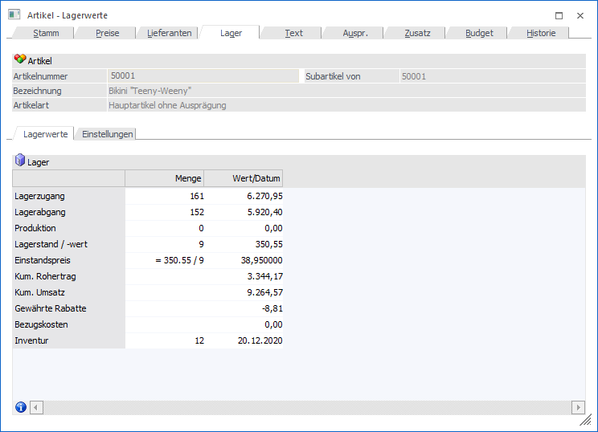
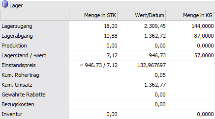
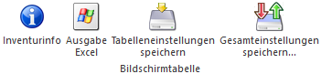

Das Unterregister "Lagerwerte" besteht aus einer Informationstabelle und gibt Auskunft über die aktuellen Lagerwerte.

In der Tabelle stehen folgende Zeilen und Spalten zur Verfügung:
Ø Lagerzugang
Die Zeile "Lagerzugang" wird von allen Lagerbuchungen beeinflusst. Dabei werden die Werte erhöht, wenn ein Liefereingang oder eine direkte L-Faktura (= ohne vorhergehenden Liefereingang) erfasst und gedruckt werden.
Ø Lagerabgang
Diese Zeile wird von allen Lagerbuchungen beeinflusst. Dabei werden die Werte verringert, wenn ein Lieferausgang oder eine Direktfaktura (= ohne vorhergehenden Lieferschein) erfasst und gedruckt werden.
Ø Produktion
Die Zeile "Produktion" wird durch Lagerbuchungen mit dem Buchungsschlüssel "P" beeinflusst.
Ø Lagerstand
Der Lagerstand wird beim Druck eines Lieferscheines oder einer Direktfaktura reduziert und beim Druck eines Liefereingangs oder einer direkten L-Faktura erhöht.
Ø Lagerwert
Der Lagerwert wird beim Druck eines Lieferscheines oder einer Direktfaktura reduziert und beim Druck eines Liefereingangs oder einer direkten L-Faktura erhöht.
Ø Einstandspreis
Der Einstandspreis wird jedes Mal neu gerechnet, wenn sich Lagerwert oder Lagermenge ändern. Sollte der Lagerstand allerdings negativ werden, so erfolgt keine Neuberechnung mehr.
In der Spalte "Menge" wird angezeigt, wie sich der Einstandspreis aus den aktuellen Zahlen errechnet. In der Spalte "Wert/Datum" wird wiederum der aktuelle Einstandspreis angezeigt.
Berechnung
Einstandspreis = Lagerwert / Lagermenge
Achtung
Bei der Neuanlage eines Artikels wird der allgemeine Einkaufspreis (Register "Preise", Unterregister "Preise", Feld "Einkaufspreis") als vorläufiger Einstandspreis gesetzt.
Ø Kum. Rohertrag
Der Wert dieser Zeile wird beim Druck einer Faktura oder einer Lagerbuchung mit dem Buchungscode "V" (Verkauf) automatisch erhöht.
Berechnung
Rohertrag = Verkaufserlös - Einstandspreis
Ø Kum. Umsatz
Der Wert dieser Zeile wird beim Druck einer Faktura oder einer Lagerbuchung mit dem Buchungscode "V" (Verkauf) automatisch erhöht.
Berechnung
Umsatz = Verkaufserlös = Verkaufspreis - aller gewährten Rabatte bzw. + allen Zuschlägen
Ø Gewährte Rabatte
An dieser Stelle wird die Summe aller gewährten Rabatte des aktuellen Artikels ausgewiesen.
Ø Bezugskosten
In dieser Zeile wird die Summe aller bereits berechneten Bezugskosten des aktuellen Artikels ausgewiesen.
Ø Inventur
Die Menge in der Zeile "Inventur" ist eine Information über den zuletzt erfassten Ist-Stand samt Ist- Datum aus dem Modul WinLine FAKT - Inventur.
Sobald die Abspeicherung der Inventurerfassung erfolgt ist, wird die Zeile "Inventur" sofort aktualisiert. Eine Verbuchung der Inventurwerte ist hierfür nicht notwendig. Bei einem Jahresabschluss wird die Information wiederum nicht in das neue Wirtschaftsjahr übernommen.
Ø Menge kommissioniert (Spalte)
In der Spalte "Menge kommissioniert" wird eben diese angezeigt, sowie der Lagerstand, welcher durch diese kommissionierte Menge verringert wird. Diese Spalte bzw. die Werte sind nur in jenem Wirtschaftsjahr verfügbar, in dem auch der Beleg bearbeitet wird. Ebenso verhält es sich mit der Kommissionierungs-Einzelzeile im Artikeljournal. Dies hat z.B. folgende Auswirkungen:
ü Die Felder werden beim Jahreswechsel nicht übernommen.
ü Wenn die Kommissionierung in einem anderen Wirtschaftsjahr bearbeitet wird als sie ursprünglich erfasst wurde, werden die Zeilen im urspr. Jahr gelöscht und im neuen eingefügt.
ü Wenn die Aufträge in einem anderen Wirtschaftsjahr im "Kundenbestellungen bearbeiten" bearbeitet werden als sie ursprünglich erfasst wurden, werden die Zeilen im urspr. Jahr gelöscht.
ü Wenn der Lieferschein gedruckt wird, werden die Zeilen im urspr. Jahr gelöscht.
ü Wenn der Lieferschein storniert wird, werden die Zeilen im aktuellen Jahr wiederhergestellt.
ü Wenn der Auftrag storniert wird, werden die Zeilen im urspr. Jahr gelöscht
Ø Menge in (Spalte)
Wird ein Artikel in 2 Mengen geführt, so werden in dieser Spalte (hier: "Menge in KG") die Werte der zweiten Menge ausgewiesen.

Ø nicht verf. Bestand (Spalte)
Handelt es sich um einen Artikel mit Lagerorten des WinLine LAGERMANAGMENTs, so wird in der Zeile "Lagerabgang" der Spalte "nicht verf. Bestand" die Gesamtmenge aller nicht verfügbaren Lagerorte des Artikels angezeigt. In der Zeile "Lagerstand" wird zusätzlich der Lagerstand abzüglich des nicht verfügbaren Bestands dargestellt.
Tabellenbuttons

Ø Inventurinfo
Mit Hilfe des Buttons "Inventurinfo" wird das Programm "Inventurinformation" gestartet, in welchem die einzelnen Inventurerfassungen des Artikels dargestellt werden.
Ø Ausgabe Excel
Durch Anwahl des Buttons "Ausgabe Excel" wird der Inhalt der Tabelle an Microsoft Excel übergeben.
Ø Tabelleneinstellungen speichern
Die Spalten einer Tabelle können grundsätzlich an beliebige Positionen verschoben, bzw. in der Breite entsprechend angepasst werden. Durch Anwahl des Buttons "Tabelleneinstellungen speichern" werden die Einstellungen benutzerspezifisch gespeichert und bei dem nächsten Aufruf des Programmpunktes wieder vorgeschlagen.
Ø Gesamteinstellungen speichern
Im Gegensatz zu "Tabelleneinstellungen speichern" können mit "Gesamteinstellungen speichern" mehrere Tabellenaufbauten gespeichert und nach Wunsch geladen werden. Zusätzlich werden Sonderfunktionen der Tabelle (z.B. "Spalte gruppieren") ebenfalls bei der Speicherung bedacht.